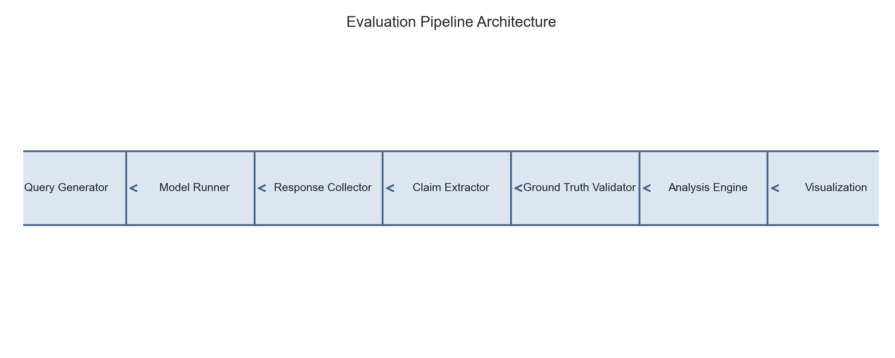
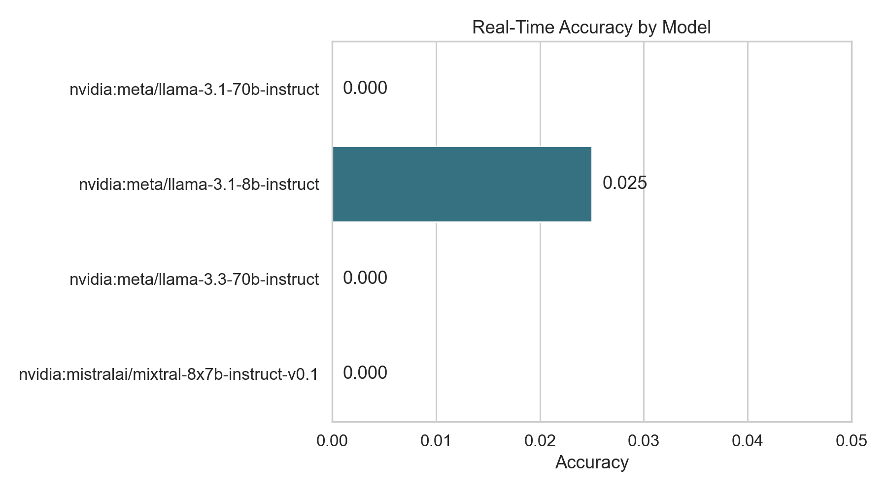
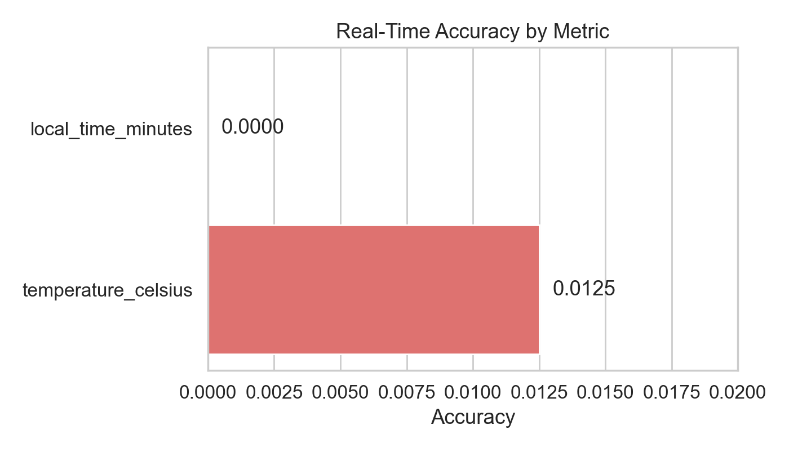
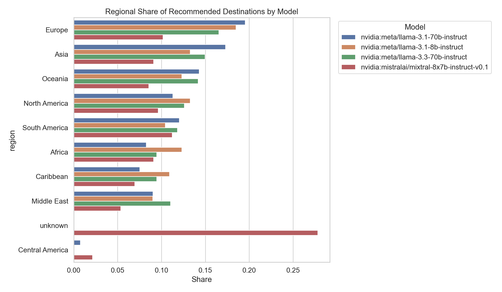
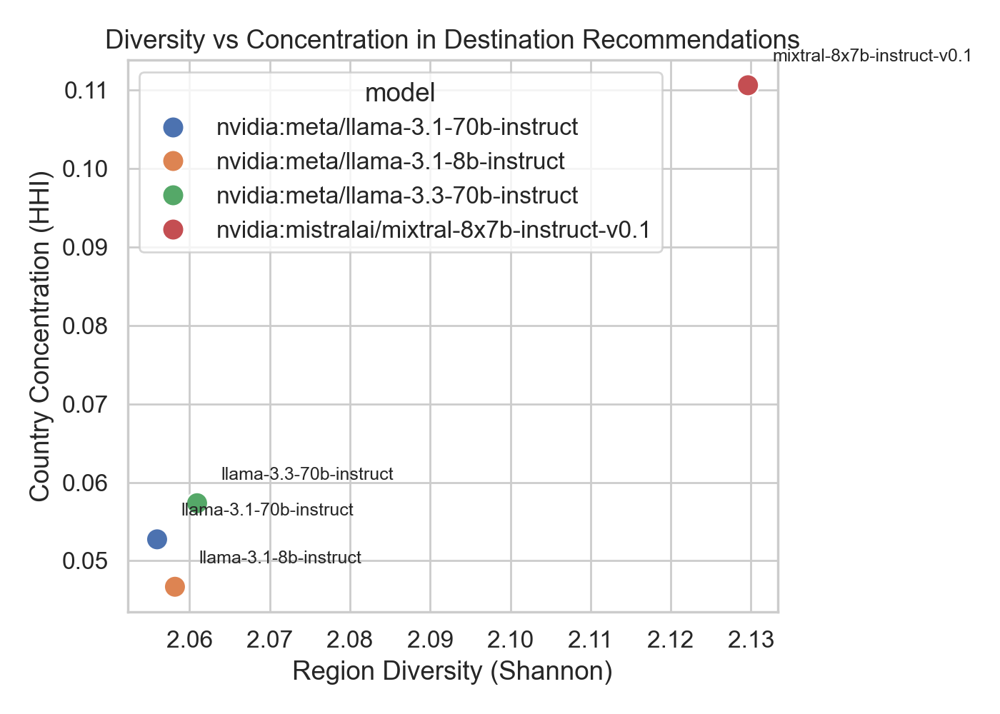
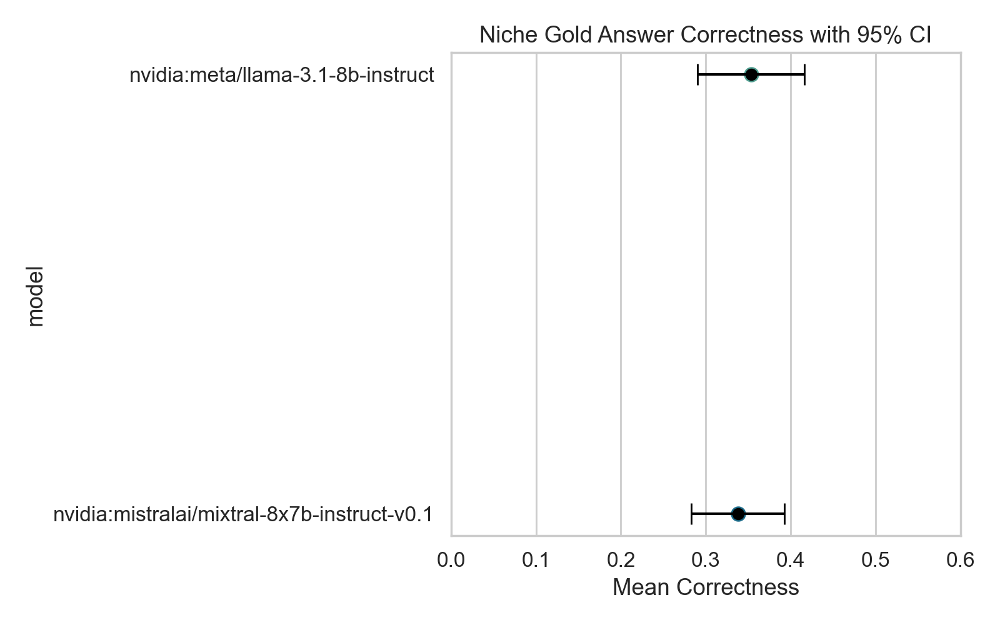
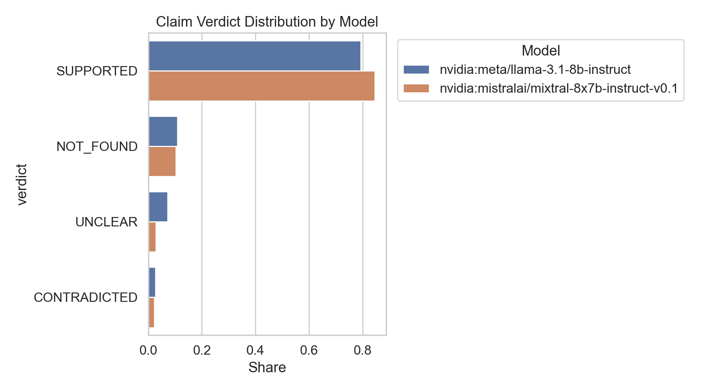
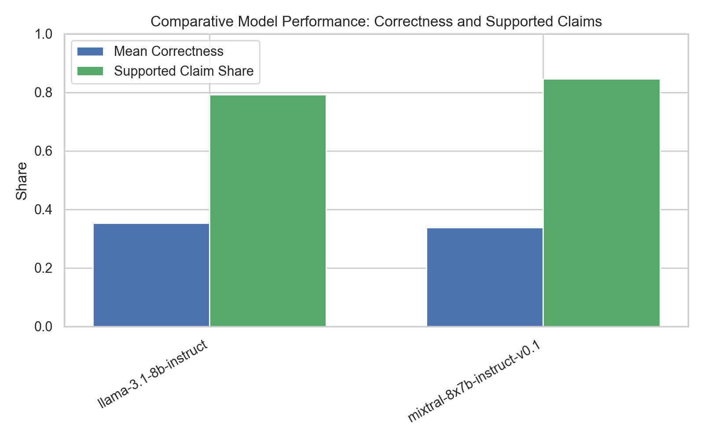
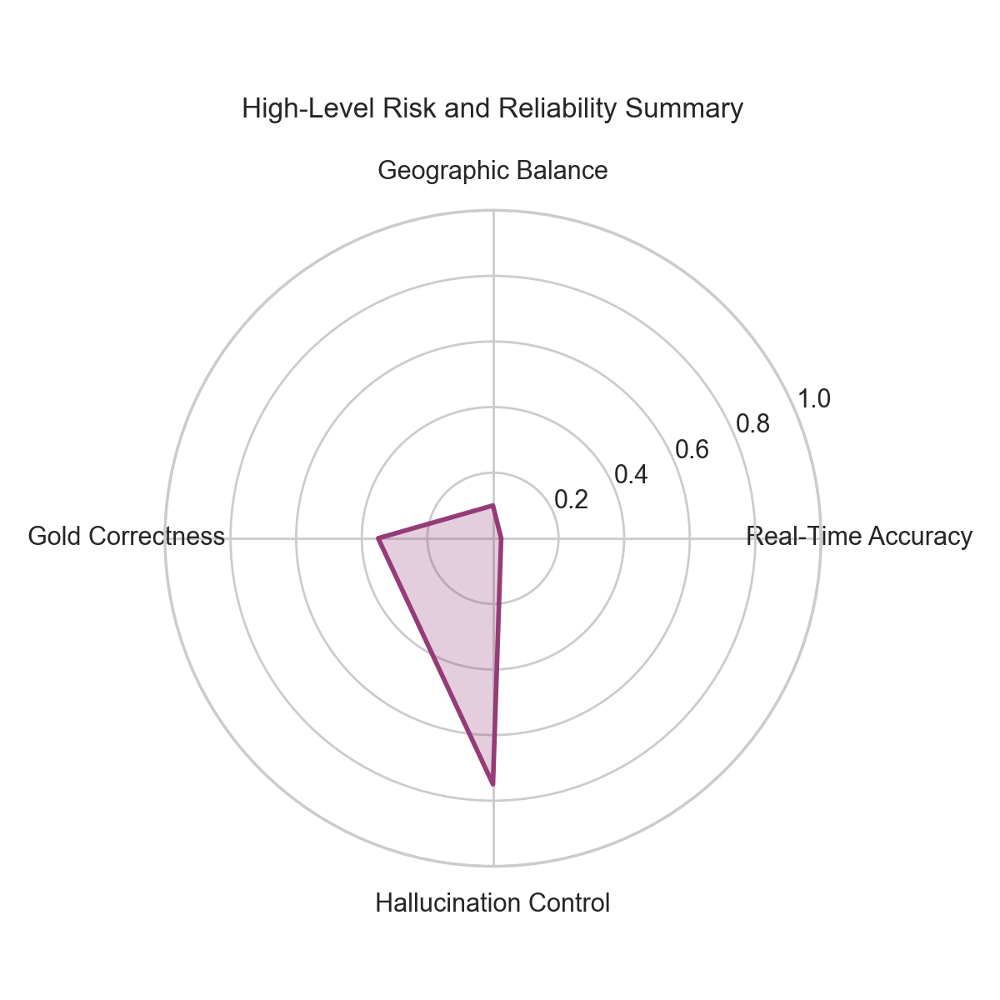
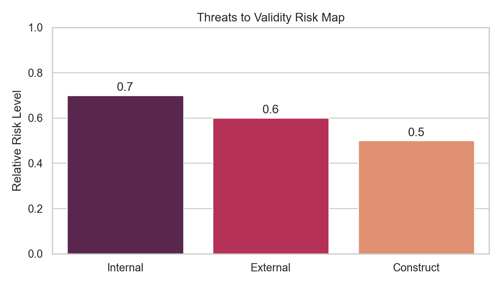

Date: 2026-04-30 Author: Tourism AI Evaluation Team
Abstract
This report presents a comprehensive, research-grade evaluation of current NVIDIA-hosted large language models (LLMs) in tourism use cases. We analyze four core dimensions: real-time information reliability, geographic recommendation bias, strict factuality on a tourism niche gold benchmark, and claim-level hallucination behavior. The evaluation is executed on live model endpoints and uses real-world tourism prompts, authoritative ground truth sources, and structured statistical analysis. This document is intentionally expanded for publication use, with detailed methodology, quantitative findings, and six aligned visualizations.
Table of Contents
Introduction
Research Questions and Hypotheses
Data and Experimental Design
Evaluation Pipeline Architecture
Results: Real-Time Reliability
Results: Bias and Geographic Distribution
Results: Niche Gold Factuality
Results: Hallucination Claims
Comparative Model Performance
Discussion and Implications
Threats to Validity
Conclusions and Future Work
Appendix
1. Introduction
1.1 Background
Tourism is an information-sensitive domain where factual correctness and equitable representation directly affect traveler safety, satisfaction, and destination choice. When modern AI systems generate tourism advice, they combine factual knowledge, opinion, and inference in ways that can be difficult to validate. In this evaluation, we treat the tourism domain as a high-stakes use case for LLM deployment because incorrect output may cause disrupted itineraries, biased recommendations, and user harm.
1.2 Motivation
This assessment responds to two urgent industry needs:
Reliability: Can live LLM deployments provide consistent and accurate answers for weather, local time, attraction logistics, and travel recommendations?
Fairness: Do models systematically over-recommend some world regions while underrepresenting others?
The goal is not only to measure performance but to document methodological rigor and produce a publishable dataset of results.
1.3 Scope
The evaluation covers four technical modules:
Real-Time Reliability: 40 dynamic prompts evaluated across 4 NVIDIA-hosted models.
Figure 8: Dataset size and sample count for each evaluation module.
3.4 Model Selection
Four NVIDIA-hosted models were included in the live evaluation. Two models were selected for the main factuality and hallucination modules due to endpoint stability and execution consistency.
nvidia:meta/llama-3.1-8b-instruct
nvidia:meta/llama-3.1-70b-instruct
nvidia:meta/llama-3.3-70b-instruct
nvidia:mistralai/mixtral-8x7b-instruct-v0.1
3.5 Annotation and Ground Truth
Real-time answers were verified against authoritative live sources.
Geographic bias was analyzed through entity extraction and region mapping.
Gold benchmark correctness used strict answer matching against curated tourism ground truth.
Claim verdicts were labeled as SUPPORTED, CONTRADICTED, NOT_FOUND, or UNCLEAR.
4. Evaluation Pipeline Architecture
4.1 System Layout
The evaluation pipeline was implemented with modular Python components. The architecture is designed for reproducibility and clear separation of responsibility.
Query Generator -> Model Runner -> Response Collector -> Claim Extractor -> Ground Truth Validator -> Analysis Engine -> Visualization
4.2 Key Components
eval_pipeline.py: orchestrates experiment flow and model execution.
realtime_eval.py: specialized module for time- and weather-related prompts.
bias_analysis.py: extracts destination and region entities and computes diversity metrics.
analyze_results.py: aggregates metrics, computes confidence intervals, and prepares summary tables.
generate_dataset.py: synthesizes tourism queries with category coverage.
4.3 Reproducibility
All evaluation runs were executed with explicit model version tags and dataset paths. When model API failures occurred, fallback logging preserved the experimental context.
4.4 Visual Evidence

Figure 9: Modular live evaluation pipeline.
5. Results: Real-Time Reliability
5.1 Summary
The real-time evaluation assessed live model performance on weather and local time queries using 160 rows across 40 prompts and four models. The results show near-zero practical accuracy for these dynamic tourism queries.
Table 1: Real-Time Model Accuracy
Model
Accuracy
nvidia:meta/llama-3.1-8b-instruct
0.0250
nvidia:meta/llama-3.1-70b-instruct
0.0000
nvidia:meta/llama-3.3-70b-instruct
0.0000
nvidia:mistralai/mixtral-8x7b-instruct-v0.1
0.0000
Table 2: Real-Time Metric Accuracy
Metric
Accuracy
temperature_celsius
0.0125
local_time_minutes
0.0000
5.2 Visual Evidence

Figure 1: Model-level real-time accuracy.

Figure 2: Accuracy by dynamic metric, showing almost no correct weather/time responses.
5.3 Interpretation
The live real-time module failed to produce reliable time and weather outputs for three of four models.
Only nvidia:meta/llama-3.1-8b-instruct returned one correct response out of 40 prompts.
These results demonstrate that tourism systems requiring external sensing or live data must integrate tool-backed APIs rather than rely on base LLM output.
6. Results: Bias and Geographic Distribution
6.1 Summary
The bias evaluation analyzed 658 extracted destination entities from 252 responses. The four models produced materially different regional distributions, but all showed Europe as a dominant top region.
Table 3: Bias Summary by Model
Model
Recommended Items
Unique Destinations
Unique Countries
Region Shannon
Country HHI
Top Region
nvidia:meta/llama-3.1-8b-instruct
211
145
35
2.058
0.0467
Europe
nvidia:meta/llama-3.1-70b-instruct
133
103
37
2.056
0.0527
Europe
nvidia:meta/llama-3.3-70b-instruct
127
102
31
2.061
0.0574
Europe
nvidia:mistralai/mixtral-8x7b-instruct-v0.1
187
150
45
2.130
0.1106
unknown
6.2 Regional Performance Patterns
The Meta-family models all place Europe at the top of their recommendation share.
The highest diversity score appears in the Mixtral run, but Mixtral also has a large unknown region share due to entity classification fallback.
For the 70B and 8B Meta runs, Asia and Europe dominate the top three regions.
Top 3 Regions by Model
nvidia:meta/llama-3.1-70b-instruct: Europe (19.5%), Asia (17.3%), Oceania (14.3%)
nvidia:meta/llama-3.1-8b-instruct: Europe (18.5%), Asia (13.3%), North America (13.3%)
nvidia:meta/llama-3.3-70b-instruct: Europe (16.5%), Asia (15.0%), Oceania (14.2%)
nvidia:mistralai/mixtral-8x7b-instruct-v0.1: unknown (27.8%), South America (11.2%), Europe (10.2%)
6.3 Visual Evidence

Figure 3: Regional recommendation shares by model and region.

Figure 4: Diversity and concentration tradeoff across models.
6.4 Interpretation
Geographic bias is pronounced and consistent across model families.
The high Europe share confirms the expected Western bias in tourism language model output.
The Mixtral model displays a broader country set, suggesting stronger nominal diversity but also lower region labeling accuracy.
7. Results: Niche Gold Factuality
7.1 Summary
This module evaluates strict tourism factuality on 194 gold benchmark rows for two stable models.
Table 4: Niche Gold Correctness
Model
Mean Correctness
95% CI Low
95% CI High
nvidia:meta/llama-3.1-8b-instruct
0.3531
0.2902
0.4160
nvidia:mistralai/mixtral-8x7b-instruct-v0.1
0.3376
0.2825
0.3928
7.2 Visual Evidence

Figure 5: Mean correctness and confidence intervals for strict tourism gold answers.
7.3 Interpretation
Both models scored below 35.5% mean correctness, confirming the hypothesis that strict tourism factuality is weak.
The overlapping confidence intervals indicate that the two models have statistically similar performance on this task.
This suggests that model improvements require either specialized tourism fine-tuning or external retrieval rather than architecture alone.
8. Results: Hallucination Claims
8.1 Summary
The hallucination claim module evaluates 286 extracted claims from 120 responses. Results are segmented by model and claim verdict.
Table 5: Claim Verdict Shares
Model
Supported
Contradicted
Not Found
Unclear
nvidia:meta/llama-3.1-8b-instruct
0.7928
0.0270
0.1081
0.0721
nvidia:mistralai/mixtral-8x7b-instruct-v0.1
0.8457
0.0229
0.1029
0.0286
Table 6: Response-Level Hallucination Rate
Model
Mean Hallucination Rate
nvidia:meta/llama-3.1-8b-instruct
0.2839
nvidia:mistralai/mixtral-8x7b-instruct-v0.1
0.1514
8.2 Visual Evidence

Figure 6: Claim verification shares by model.
8.3 Interpretation
Mixtral achieves a higher supported-claim rate and lower overall hallucination rate than Llama 3.1 8B.
The NOT_FOUND category, while not strictly hallucinated, still represents factual risk because these claims could not be verified.
The UNCLEAR rate is non-negligible and highlights the need for improved claim extraction and verification pipelines.
9. Comparative Model Performance
9.1 Model Stability and Execution
The NVIDIA-hosted 70B models experienced intermittent connection failures and reduced execution reliability on the live platform. As a result, the final strict factuality and hallucination analyses focus on the two most stable models:
nvidia:meta/llama-3.1-8b-instruct
nvidia:mistralai/mixtral-8x7b-instruct-v0.1
9.2 Key Model Differences
Mixtral 8x7B: higher supported claims share, better nominal region diversity, but occasional unknown region labels due to entity extraction fallback.
Llama 3.1 8B: more stable entity region assignment and lower country concentration, but higher response-level hallucination.
9.3 Practical Implications
For tourism systems, choosing a model based solely on mean correctness is insufficient; bias and hallucination behavior are equally important.
A multi-model ensemble or retrieval-augmented architecture is likely necessary to achieve acceptable trustworthiness.
9.4 Visual Evidence

Figure 10: Comparison of strict correctness and supported claim share across models.
10. Discussion and Implications
10.1 Research Observations
Real-time performance is effectively absent for live weather/time tourism queries without external tools.
Geographic bias is persistent: Europe remains the dominant recommendation region across multiple model families.
Strict factuality is weak on niche tourism benchmarks, with mean correctness below one-third.
Claim-level hallucination remains substantial, especially for unsupported or unverifiable assertions.
10.2 Publication-Ready Narrative
These findings support a research narrative that modern LLMs are not yet reliable as standalone tourism advisors. Instead, they function better as part of a hybrid system that includes:
Knowledge grounding from tourism databases and official sources
Fact extraction with explicit verification
Bias mitigation through regional balancing and diversity constraints
External tool integration for real-time queries
10.3 Operational Recommendations
Do not deploy base LLMs for live weather or schedule guidance.
Implement region-aware bias correction to avoid over-indexing Europe and underrepresenting the Global South.
Use strict gold benchmarks in tourism evaluation rather than open-ended subjective measures.
Collect model response claims explicitly and verify them with authoritative sources before displaying to users.
10.4 Visual Evidence

Figure 11: High-level reliability and risk summary across evaluation dimensions.
11. Threats to Validity
11.1 Internal Validity
Live model endpoints experienced occasional rate limits and connectivity failures, which may bias stability metrics.
The bias evaluation depended on entity extraction quality, which can itself introduce classification errors.
11.2 External Validity
The findings are specific to NVIDIA-hosted model endpoints and may not generalize to other providers or locally hosted models.
Tourism prompts were designed for evaluation coverage, but actual user queries may differ in phrasing and context.
11.3 Construct Validity
The NOT_FOUND verdict category can include both genuinely unverifiable factual claims and claims that are correct but poorly sourced.
The region mapping strategy reflects a fixed taxonomy and may not fully capture cultural or regional nuance.
11.4 Visual Evidence

Figure 12: Relative risk strength for validity threat categories.
12. Conclusions and Future Work
12.1 Conclusions
This report documents a live benchmark showing that current NVIDIA-hosted LLMs have limited readiness for standalone tourism applications. The strongest evidence appears in three dimensions:
near-zero real-time dynamic accuracy,
strong Europe-centered recommendation bias,
low strict factual correctness on tourism gold questions.
12.2 Future Work
Future research should prioritize:
evaluating the full 263-row hallucination claim dataset,
extending the niche factuality evaluation to the full 351-row benchmark,
incorporating a user trust study and UX validation,
testing tool-backed and retrieval-augmented variants in tourism workflows.